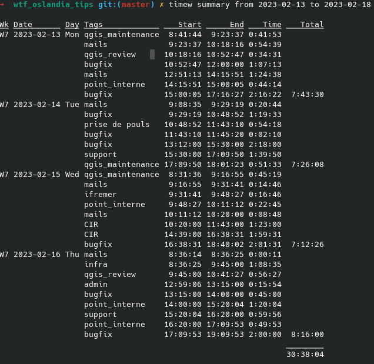
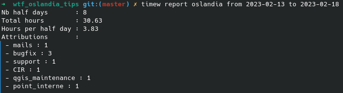

<!DOCTYPE html>
<html lang="en">
  <head>
    <meta charset="utf-8" />
    <meta name="viewport" content="width=device-width, initial-scale=1.0, maximum-scale=1.0, user-scalable=no" />

    <title>Tips & tricks @ Oslandia</title>
    <link rel="shortcut icon" href="./favicon.ico" />
    <link rel="stylesheet" href="./dist/reset.css" />
    <link rel="stylesheet" href="./dist/reveal.css" />
    <link rel="stylesheet" href="./dist/theme/black.css" id="theme" />
    <link rel="stylesheet" href="./css/highlight/base16/zenburn.css" />

    <link rel="stylesheet" href="./css/oslandia.css" />

  </head>
  <body>
    <div class="reveal">
      <div class="slides"><section  data-markdown><script type="text/template">

# Tips & Tricks 
### @ Oslandia

WTF - 26/08/2022

<table>
<tr><td>
</img></td>
</table>

Julien Cabieces - Oslandia


<table vertical-align="middle">
<style>
img {
margin:0 !important;
vertical-align:top !important;
}
table td {
border-bottom: 0 !important;
padding-left: 0 !important;
vertical-align:top !important;
}
</style>
<tr><td>

</td><td>@troopa81</td></tr>
<tr><td>

</td><td>@CabiecesJ</td></tr>
</table>

</script></section><section  data-markdown><script type="text/template">
## Plan

- Timewarrior
- Filtre sieve
- Gérer sa conf dans git
- Playbook ansible

😭 No emacs 😭

**N'importe quel outil que vous souhaiteriez présenter**


</script></section><section  data-markdown><script type="text/template">
## Timewarrior
</script></section><section  data-markdown><script type="text/template">
### Pourquoi ? 

- Suivre son temps de travail
  - Obligatoire ? -> Non
- Objectiver son temps de travail
  - Éviter les dérives
- Faciliter ses imputations
</script></section><section  data-markdown><script type="text/template">
### Comment

- outil en ligne de commande
- installation

```shell
$ apt install timewarrior
```</script></section><section  data-markdown><script type="text/template">
### Commandes clé

- Démarrer/arréter une activité

```shell
timew start WTF
timew stop
```
- Démarre nouvelle activité -> arrête la précédente
- On peut 
  - Spécifier une heure
  - Modifier
  - Supprimer

[Cheatsheet](https://github.com/mkluge/timewcs/raw/master/cheatsheet.pdf)
</script></section><section  data-markdown><script type="text/template">
### Tout ça pour quoi?


</script></section><section  data-markdown><script type="text/template">
### Mais encore ?

Sommer par activité

```shell
timew summary qgis_bugfix :lastweek
```

👍 Imputations
</script></section><section  data-markdown><script type="text/template">
### Avec de la couleur 😎


</script></section><section  data-markdown><script type="text/template">
### Rapport oslandia specific 

[Report](https://git.oslandia.net/jcabieces/myconf/blob/master/timewarrior/oslandia_report.py) à copier dans ~/timewarrior/extensions


</script></section><section  data-markdown><script type="text/template">
## Filtres sieve
</script></section><section  data-markdown><script type="text/template">
### Kezako?

- Code exécuté côté serveur mail
  - pour chaque mail reçu
- Permet de *traiter* les mails sur le serveur
  - Évite de récupérer des mails inutiles
  - Même règles si on accède d'endroits différents
	- Ex: téléphone
  - Message d'absence
- Depuis le webmail [Gandi](https://webmail.gandi.net/roundcube/?_task=mail&_mbox=INBOX)
  - *Settings > Filters > Filter sets > Edit filter sets* 
- Ma [conf](https://git.oslandia.net/jcabieces/myconf/-/blob/master/mail/myconf.siv)
</script></section><section  data-markdown><script type="text/template">
### Message d'absence

```sieve
if allof (currentdate :zone "+0200" :value "ge" "iso8601" "2023-02-17T00:00:00+02:00", 
          currentdate :zone "+0200" :value "le" "iso8601" "2023-02-26T23:59:00+02:00",
          not header "Precedence" "list",
          not header "Precedence" "bulk",
          not exists "List-Id")
{
	vacation :days 7 :addresses "julien.cabieces@oslandia.com" :subject "Absence" text:
Bonjour, 

Je suis en congé jusqu'au 26 Février 2023. En cas d'urgence, merci de contacter l'adresse info@oslandia.com

I'm in vacation until the 26th of February 2023. In case of emergency, please send an email at info@oslandia.com
  
Regards,
Julien
.
;
}
```</script></section><section  data-markdown><script type="text/template">
### GitHub : 1er message

```sieve
# GitHub Pour les nouveaux tickets/PR pour lesquels je ne suis pas abonné (mention, comment, author)
# ne garder que s'il s'agit d'un nouveau
if allof (header :is "X-GitHub-Reason" ["subscribed", "push"],
	  header :regex "Subject" "^Re: \\[qgis/QGIS\\].*",
	  not address "Cc" "julien.cabieces@oslandia.com" )
{
  discard;
  stop;
}
```
</script></section><section  data-markdown><script type="text/template">
### Virer les mails inutiles

```sieve
# vire les mails concernant les plugins QGIS approuvés
# TODO: sauf si ca concerne les plugins Oslandia?
if allof(address "From" "noreply@qgis.org",
	 header :regex "Subject" "^\\[QGIS-Developer\\] Plugin \\[.*")
{
  discard;
  stop;
}

# vire les mails inutiles
if header :contains "Subject" "[troopa81/QGIS] Run failed: Auto set milestone on PR -"
{
  discard;
}
```
</script></section><section  data-markdown><script type="text/template">
### TODO : Ajouter des labels

- Repérer des mot-clés
  - Postgres, Oracle, Report, Selective masking 😬
- Afficher les labels dans le client
- Faciliter/accélérer la lecture
  - Ex: différence PR/Issue
</script></section><section  data-markdown><script type="text/template">
## Gérer sa conf dans git
</script></section><section  data-markdown><script type="text/template">
### Comment

- Dépot perso https://git.oslandia.net/jcabieces/myconf
  - *Créer projet > Login comme groupe/namespace*
- Pour y stocker : TOUT
  - conf Emacs
  - conf shell (alias, commande)
  - conf gdb
  - notes
  - todos
  - filtre sieve, extensions timewarrior
  - ansible
  - [key bindings](https://git.oslandia.net/jcabieces/myconf/-/blob/master/key_bindings.org)
</script></section><section  data-markdown><script type="text/template">
## Playbook Ansible
</script></section><section  data-markdown><script type="text/template">
### Pourquoi
- Reproduire sa configuration machine à l'identique
  - Si crash machine
  - Si nouvelle machine
- Partager des éléments de configuration	
</script></section><section  data-markdown><script type="text/template">
### Comment

```shell
sudo apt install ansible
sudo ansible-playbook local.yml --tags "debug_tool"
```

ou sans paramètre *tags* si on veut tout lancer

Ma [conf](https://git.oslandia.net/jcabieces/myconf/blob/master/ansible/local.yml#L53) ansible 
</script></section><section  data-markdown><script type="text/template">
# Questions ?

WTF - 26/08/2022

<table>
<tr><td>
</img></td>
</table>

Julien Cabieces - Oslandia


<table vertical-align="middle">
<style>
img {
margin:0 !important;
vertical-align:top !important;
}
table td {
border-bottom: 0 !important;
padding-left: 0 !important;
vertical-align:top !important;
}
</style>
<tr><td>

</td><td>@troopa81</td></tr>
<tr><td>

</td><td>@CabiecesJ</td></tr>
</table>

</script></section></div>
    </div>

    <script src="./dist/reveal.js"></script>

    <script src="./plugin/markdown/markdown.js"></script>
    <script src="./plugin/highlight/highlight.js"></script>
    <script src="./plugin/zoom/zoom.js"></script>
    <script src="./plugin/notes/notes.js"></script>
    <script src="./plugin/math/math.js"></script>
    <script>
      function extend() {
        var target = {};
        for (var i = 0; i < arguments.length; i++) {
          var source = arguments[i];
          for (var key in source) {
            if (source.hasOwnProperty(key)) {
              target[key] = source[key];
            }
          }
        }
        return target;
      }

      // default options to init reveal.js
      var defaultOptions = {
        controls: true,
        progress: true,
        history: true,
        center: true,
        transition: 'default', // none/fade/slide/convex/concave/zoom
        plugins: [
          RevealMarkdown,
          RevealHighlight,
          RevealZoom,
          RevealNotes,
          RevealMath
        ]
      };

      // options from URL query string
      var queryOptions = Reveal().getQueryHash() || {};

      var options = extend(defaultOptions, {}, queryOptions);
    </script>


    <script>
      Reveal.initialize(options);
    </script>
  </body>
</html>
